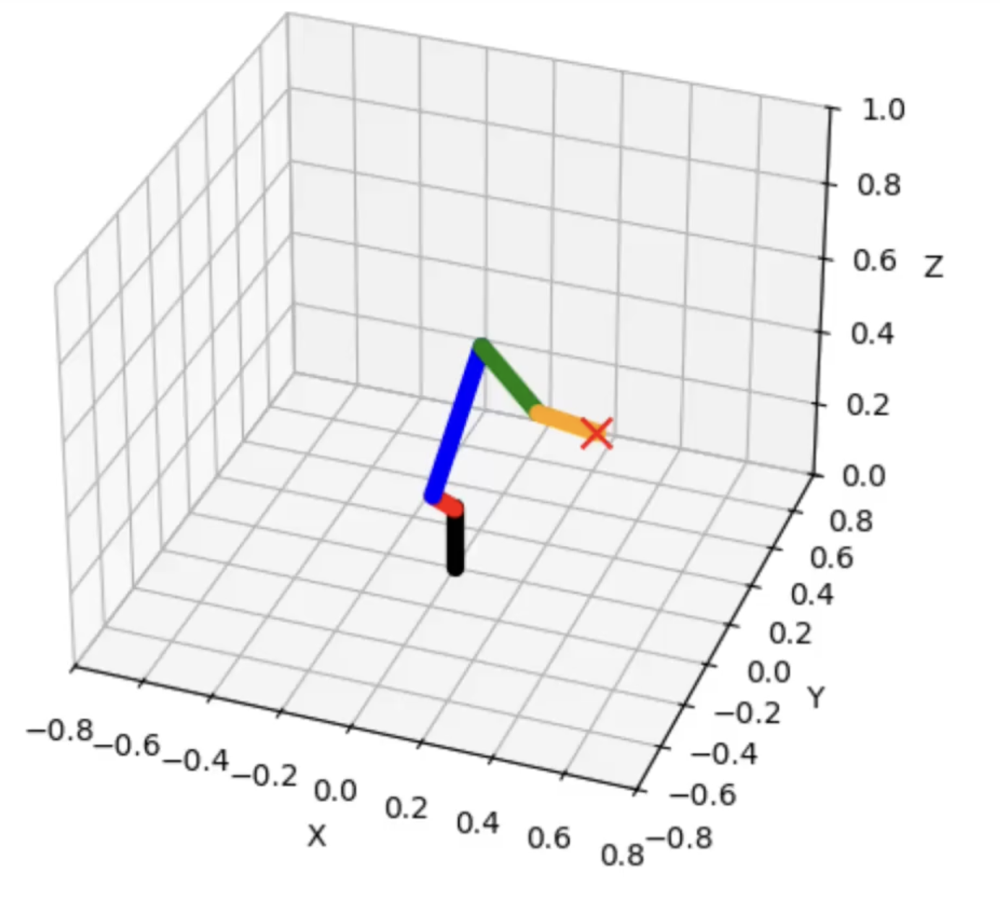
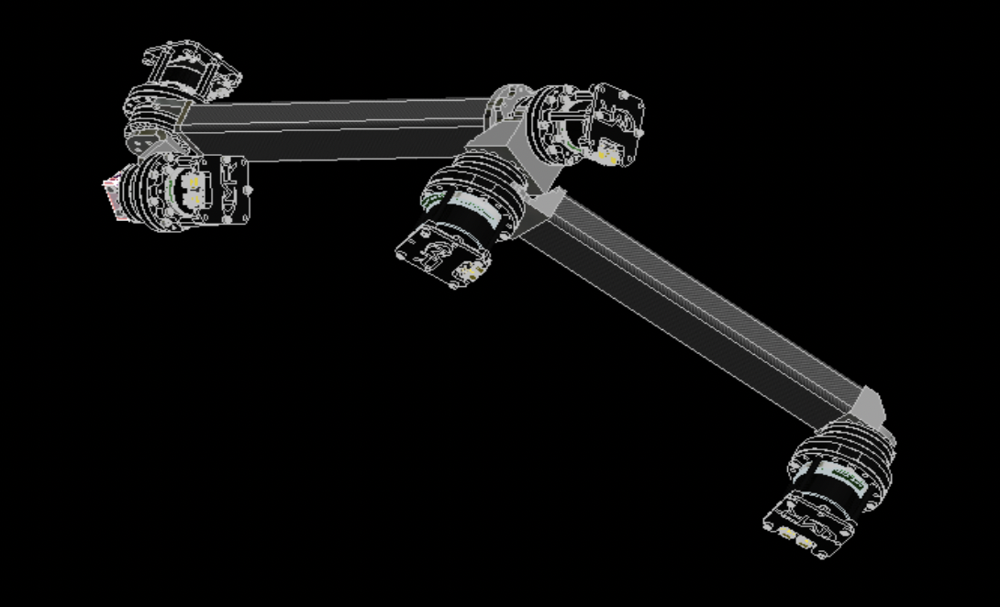
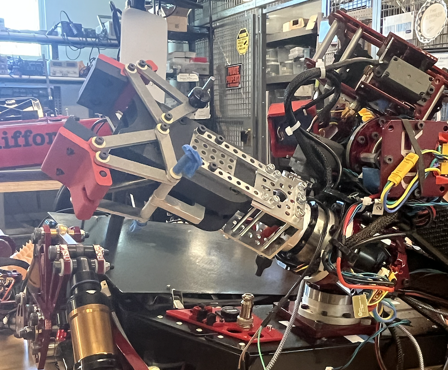
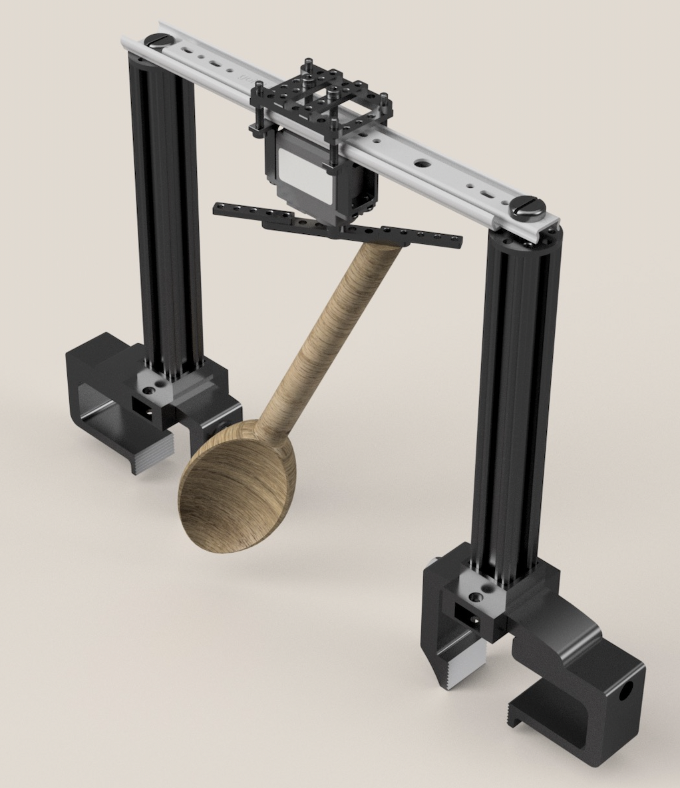
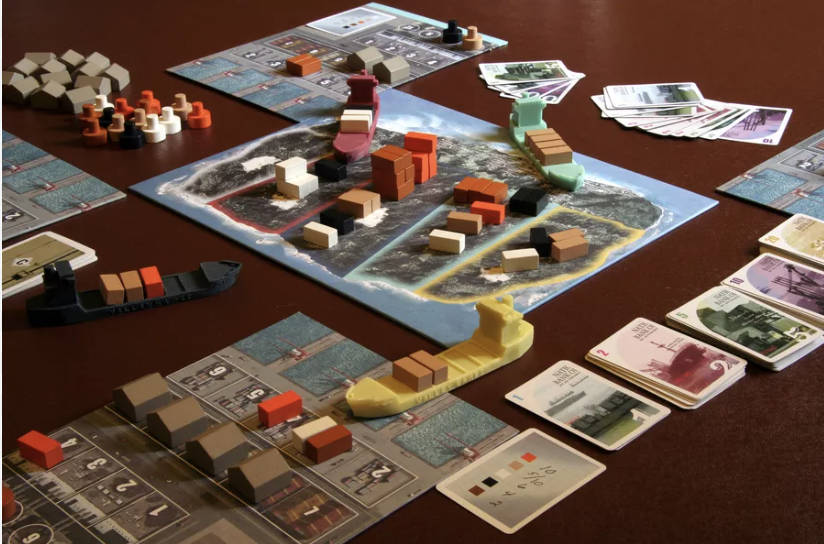
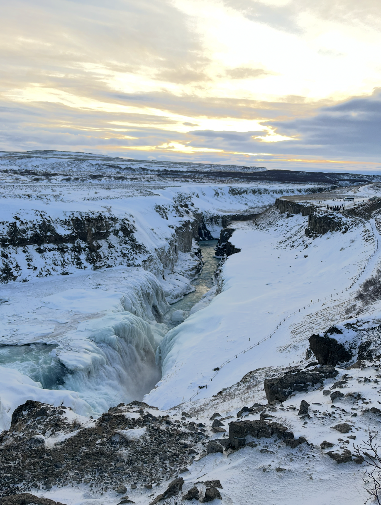

Inverse Kinematics

Arm Structure

End Effector

Electrospray Research

Boom Deployment

Automatic Soup Stirrer

About
This past spring, I graduated summa cum laude from Cornell University with a Bachelor of Science in Mechanical Engineering. This summer, I am working as a Structural Mechanics and Concepts Intern at NASA Langley Research Center working on designing the end effector for a lunar surface manipulator designed for heavy lift operations.
At Cornell, I led the arm sub-team of the Cornell Mars Rover project team, building a six-axis robotic manipulator. The summer before, as a Deployable Technologies Intern at Physical Sciences Inc., I designed a gripper enabling long-distance carry of rescue litters, tested a low-lubricity fluid pump, and contributed to the development of a lightweight mobile folding bridge.
I also worked in the Cornell Advanced Space Technology Research and Architectures (ASTRA) Lab on novel propellants for electrospray thrusters, and beginning in my sophomore year, was a research assistant at the Cornell Space Structures Lab, designing a boom deployment mechanism to deploy ultra-lightweight booms into stable geometries.
My coursework included Spaceflight Mechanics, Spacecraft Technology and Systems Architecture, Intermediate Dynamics, Propulsion, Combustion, Statics, Fluids, Mechanics of Materials, Mechatronics, and Heat Transfer.





